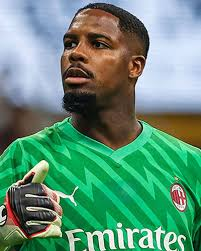
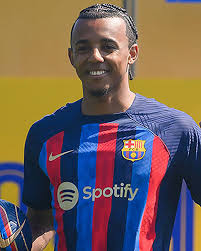
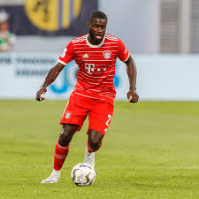
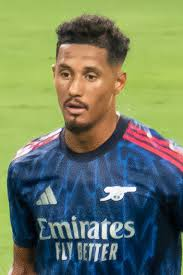
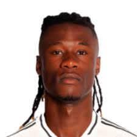
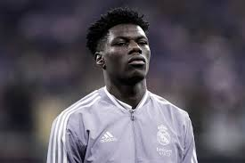
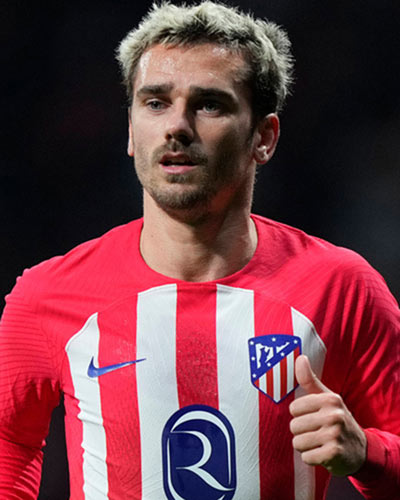
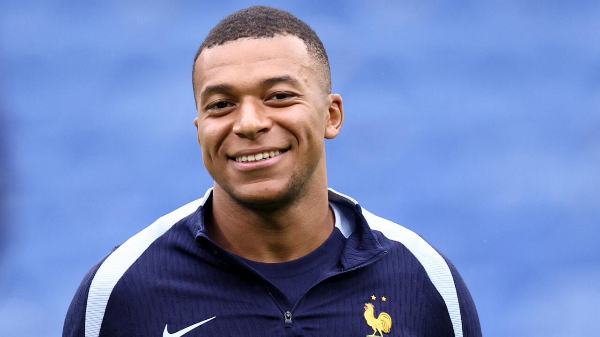
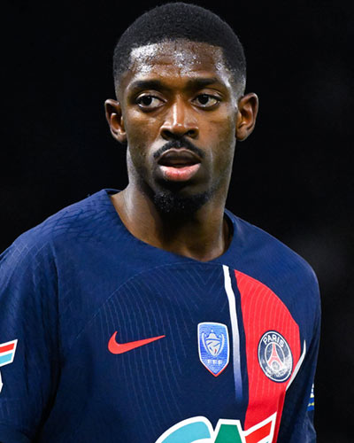

| Mike Maignan |
Portero |
30 |
Mike Maignan (n. 1995). Guardameta del AC Milan y titular en la selección francesa. |
 |
| Jules Koundé |
Defensa |
27 |
Jules Koundé (n. 1997). Defensa del FC Barcelona, habitual en la zaga francesa. |
 |
| Dayot Upamecano |
Defensa central |
27 |
Dayot Upamecano (n. 1998). Central del Bayern Múnich, fijo en la defensa de Francia. |
 |
| William Saliba |
Defensa central |
24 |
William Saliba (n. 2001). Central del Arsenal, consolidado en el once de Didier Deschamps. |
 |
| Eduardo Camavinga |
Mediocampista |
22 |
Eduardo Camavinga (n. 2002). Mediocentro del Real Madrid, joven promesa francesa. |
 |
| Aurélien Tchouaméni |
Mediocampista |
25 |
Aurélien Tchouaméni (n. 2000). Mediocampista defensivo del Real Madrid, consolidado en 2025. |
 |
| Antoine Griezmann |
Mediocampista ofensivo |
34 |
Antoine Griezmann (n. 1991). Uno de los líderes históricos de la selección, juega en el Atlético de Madrid. |
 |
| Kylian Mbappé |
Delantero |
26 |
Kylian Mbappé (n. 1998). Capitán de Francia, delantero del Real Madrid y figura mundial. |
 |
| Ousmane Dembélé |
Extremo |
28 |
Ousmane Dembélé (n. 1997). Extremo del PSG, destaca por su velocidad y regate. |
 |
| Olivier Giroud |
Delantero |
38 |
Olivier Giroud (n. 1986). Máximo goleador histórico de Francia, juega en la MLS en 2025. |
 |